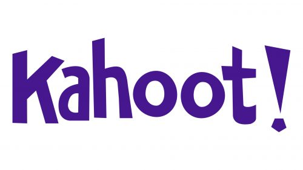
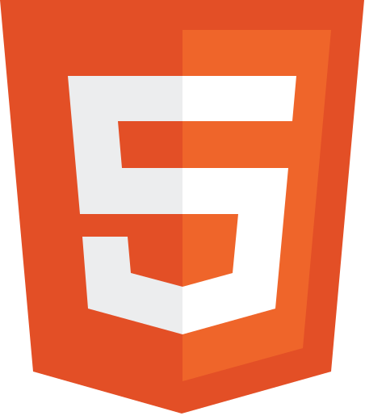
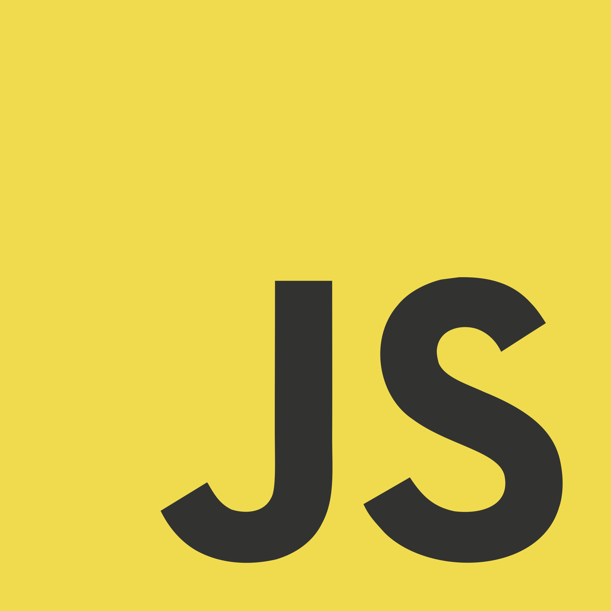
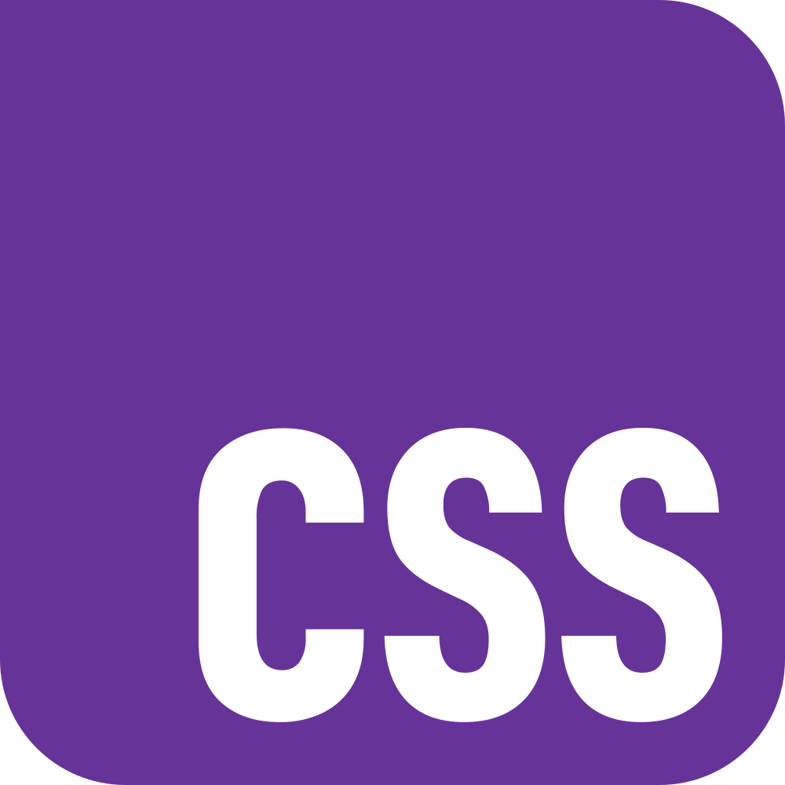
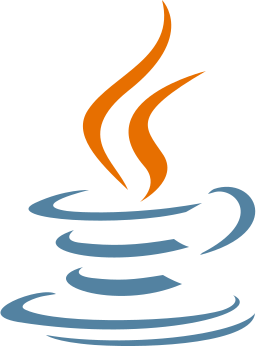

C# · Multijugador2024KahootInspired
Juego estilo Kahoot en C# (.NET 8 WinForms) con arquitectura cliente-servidor por sockets TCP. Servidor gestiona partidas y preguntas desde JSON.
C#.NET 8Sockets
Tiempo realWinForms
Programador junior · C#, .NET, SQL, JavaScript, PHP
Con formación en desarrollo multiplataforma y experiencia en prácticas en empresa. Busco mi primer equipo, donde aportar código claro y ganas de aprender.
Soy Daniel, de Barcelona. Acabé el CFGS de Desarrollo de Aplicaciones Multiplataforma en EDUCEM (2023–2026) tras el CFGM de Sistemas Microinformáticos y Redes (2021–2023). Me gusta el código que se entiende y que funciona; en GitHub tengo proyectos en C#/.NET, PHP + MySQL y JavaScript, desde aplicaciones de escritorio hasta webs con base de datos y consumo de APIs.
Estuve un año como IT Helpdesk en Pekos Group (2024–2025) y antes en atención al cliente y reparación de equipos en CPU Informàtica Nord. Eso me dio base de sistemas, trato con usuarios y hábito de documentar. Busco mi primer equipo como programador junior — presencial o remoto desde Barcelona — donde seguir aprendiendo con buena mentoría y aportar código limpio desde el primer mes.
Barcelona, presencial y remoto · Currículum en PDF
Lo que puedo defender hoy en una prueba técnica.
Sintaxis de C#, clases y objetos, colecciones y manejo básico de excepciones. Lo usé en prácticas y ejercicios de .NET.
Aplicaciones y APIs con .NET. Sintaxis C#, POO y aplicaciones sencillas. Nivel de formación.

Consultas SELECT y JOIN, diseño de tablas y relaciones. Lo usé en el proyecto final y en prácticas.

Maquetación con etiquetas semánticas, formularios y accesibilidad básica. Lo uso en todos mis proyectos.

Fetch, módulos y DOM. Consumo de APIs REST con manejo de errores y manipulación del DOM sin frameworks.
Formularios, sesiones y conexión a base de datos. Nivel de formación.

Flexbox y Grid, diseño responsive y contraste cuidado. Animaciones sencillas y organización por componentes.

Programación orientada a objetos, colecciones y manejo de excepciones. Ejercicios y trabajos de clase.
Rutas, formularios y autenticación sencilla con Flask. Scripts de automatización y pruebas unitarias con pytest.
Mis proyectos en GitHub. Usa las flechas para moverte por el carril.

C# · Multijugador2024Juego estilo Kahoot en C# (.NET 8 WinForms) con arquitectura cliente-servidor por sockets TCP. Servidor gestiona partidas y preguntas desde JSON.
 C# · Juego de mesa2025
C# · Juego de mesa2025Juego de dados y tablero para 2 a 4 jugadores en WinForms (.NET Framework 4.7.2). Tira el dado, avanza 4 fichas por 100 casillas y gana el primero en llegar.
 PHP · MySQL2026
PHP · MySQL2026Gestión de biblioteca con catálogo, préstamos, reservas, activación por email y panel admin. PHP 8 + PDO MySQL y PHPMailer, sin frameworks.
 Web · API2026
Web · API2026Web de Fórmula 1 con datos reales de la API OpenF1 (desde 2023). Mundial de pilotos, constructores y telemetría vuelta a vuelta sin dependencias.
Semántico, rápido y sin dependencias. La página que estás visitando.
Aprendí a utilizar Linux para moverme por el terminal, programación web con HTML y CSS, y empecé a entender qué eran las bases de datos, entre otros.
Aprendí a programar en varios lenguajes. Principalmente en C# .NET con Windows Forms para crear apps visuales con todo tipo de utilidades: CRUDs, Juegos... También profundicé en la programación web con tecnologías como Bootstrap, JavaScript para crear webs más profesionales. Aprendí una base de Android Studio en Java para crear apps móviles. Entre otros...
Escríbeme el puesto y el stack. Respondo en menos de un día.
daaniel.ruedaa@gmail.com
+34 689 360 981 · Barcelona, presencial y remoto